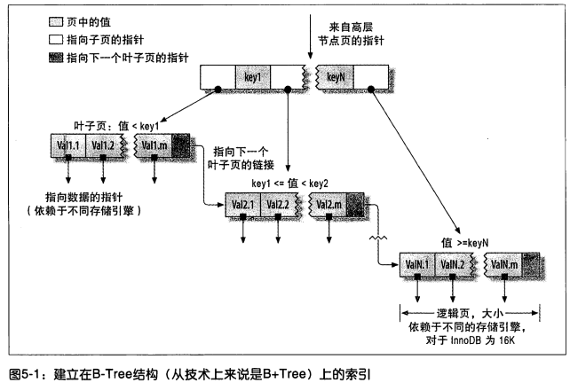
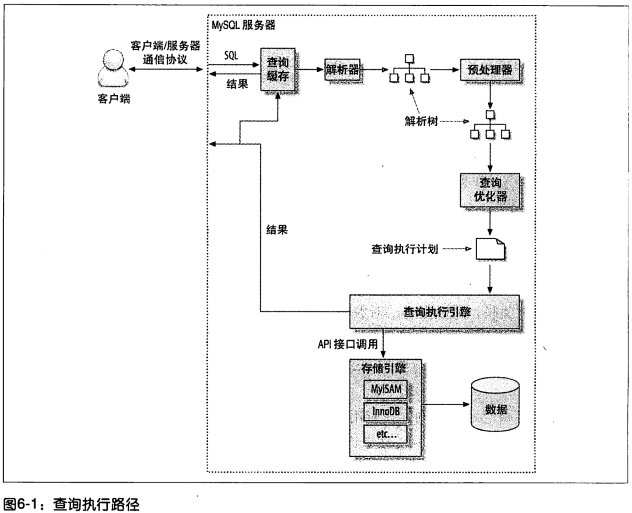
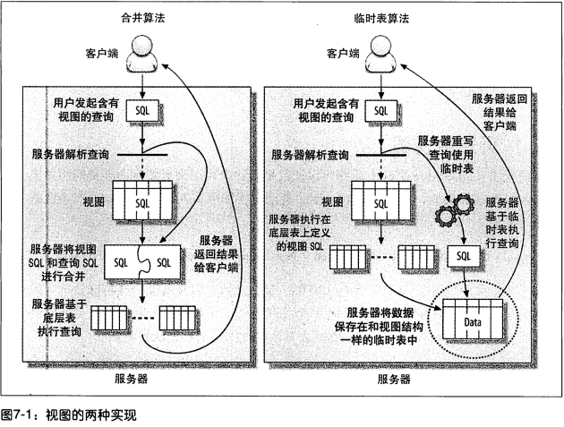
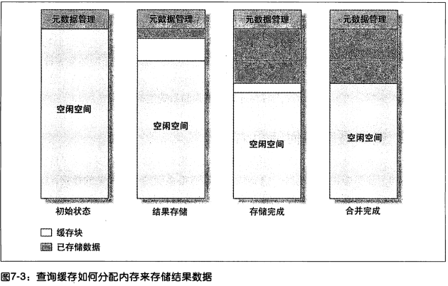
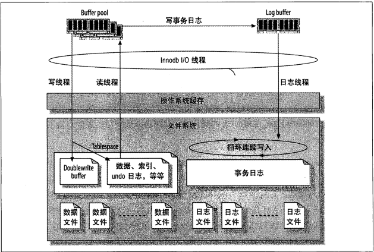
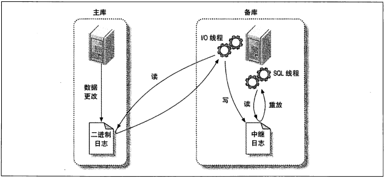

一、MySQL架构和历史
1.1 MySQL逻辑架构

最上层包含连接处理、授权认证、安全等功能，大多数基于网络的客户端/服务器的工具都有类似的架构；第二层是MySQL的 核心服务 功能，包括查询解析、优化、缓存以及所有的内置函数(时间日期、数学和加密函数)，所有跨存储引擎的功能都在这一层实现：存储过程Procedure、触发器Trigger、视图View等；最底层是 存储引擎，存储引擎负责MySQL中数据的存储和提取，核心服务层通过API和存储引擎进行通信。
每个客户端连接都会在服务器进程中拥有一个线程，服务器会缓存线程，因此不需要为每一个新建的连接创建或销毁线程。在 MySQL5.5 及以上版本支持 线程池(Thread-Pooling)，可以使用池中少量的线程来服务大量的连接。其实MySQL5.5以后还内置了 InnoDB plugin 等许多优秀的功能，5.5版本上下性能差别很大。本文所有内容会基于5.5版本以上，如果你的MySQL版本低于5.5，强烈建议升级。
优化与执行：MySQL会解析查询，并创建内部数据结构(解析树)，然后对其进行各种优化，包括重写查询、决定表的读取顺序，以及选择合适的索引等。用户可以通过特殊的关键字 提示hint 优化器，影响它的决策过程。用户可以通过 执行计划(explain) 请求优化器对优化过程的各个因素提供一个参考基准，使用户可以知道服务器是如何进行优化决策的，便于重构查询和schema、修改相关配置等。对于SELECT语句，在解析查询之前，服务层会先检查 查询缓冲(Query Cache)，如果找到就直接返回结果集，不必再执行查询解析、优化和执行的整个过程。
1.2 并发控制(Concurrent Control)
对于MySQL来说，就是如何在 服务器层 与 存储引擎层 两个层面控制 并发读写，解决方案是实现一个由两种类型的锁系统，分别为 共享锁(shard lock) 和 排他锁(exclusive lock)，也叫 读锁(read lock)或乐观锁 和 写锁(write lock)或悲观锁。
因为读取不会修改数据，大多数情况下并发读是没什么问题的。读锁是共享的，并发读是相互不阻塞的；写锁是排他的，一个写锁会阻塞其他的写锁。
因为任何时候在给定的资源上，锁定的数据量越少则系统的并发程度越高，故提高共享资源并发性的方式是让锁定对象更有选择性，尽量只锁定需要修改的数据片，而不是所有资源，也就是 锁粒度 问题。但是加锁也需要消耗资源，锁的各种操作，包括获得锁、检查锁是否应解除、释放锁等，如果系统花费大量的时间来管理锁，而不是存取数据，那么系统的性能就会受到影响。
锁策略：在锁开销和并发性之间寻求平衡，有两种最重要的lock level。
- 表锁(Table Lock)。它会锁定整张表，故开销最小，并发最差。当一个用户对表进行写操作需要先获得写锁，这会阻塞其他用户所有的 读写操作，只有没有写锁，其他读取的用户才能获得读锁。
写锁比读锁有更高的优先级，因此一个写锁请求可能会被插入到读锁队列的前面。 - 行级锁(Row Lock)。它会锁定一条记录或一个记录集，故开销最大，并发最好。行级锁只在存储引擎层实现，而MySQL服务器层没有实现。
1.3 事务(Transaction)
事务就是一组原子性的SQL查询或独立的工作单元。事务内的语句，要么全部执行成功，要么全部执行失败(即使只有其中一条语句执行失败)。一般事务使用的是悲观锁，如果开启了事务，在事务没提交之前，别人是无法修改该数据的。为了保证事务的 ACID特性(原子性atomicity、一致性consistency、隔离性isolation、持久性durability)，自然就需要额外的开销，通常会需要更强的CPU处理能力、更大的内存和更多的磁盘空间。
1.3.1 隔离级别(Isolation level)
在SQL标准中定义了四中隔离级别:
READ UNCOMMITTED(未提交读)：其他事务可以读取一个事务未提交的数据，也称为 脏读(Dirty Read)。实际应用中一般不会使用；
READ COMMITTED(提交读)：大多数DBMS的默认隔离级别都是READ COMMITTED。一个事务从开始直到提交之前，所做的任何修改对其他事务都是不可见的。也称为 不可重复读(nonrepeatable read)，因为两次执行同样的查询，可能会得到不一样的结果；
REPEATABLE READ(可重复读)：它是MySQL的默认事务隔离级别。保证了在同一个事务中多次读取同样记录的结果是一致的；
SERIALZABLE(可串行化)：它会在读取的每一行数据上都加锁，强制事务串行执行，所以可能导致大量的超时和锁争用问题。实际应用中也很少使用。
1.3.2 死锁(Dead Lock)
多个事务以不同顺序锁定锁定对方需要的资源或同时锁定同一个资源时，就可能会产生死锁。

如上图，如果凑巧，两个事务都执行了第一条UPDATE语句，同时就锁定了第一条的数据，当两个事务都去执行第二条UPDATE语句，会发现需要的资源已经被对方锁定，然后两个事务都等待对方释放锁，同时又持有对方需要的锁，则陷入死循环。
为了解决死锁，DBMS实现了各种死锁检测和死锁超时机制。InnoDB的方式是将持有最少行级悲观锁的事务进行回滚。大多数情况下应用程序只需要重新执行因死锁回滚的事务即可。
1.3.3 事务日志
事务日志可以提高事务的效率。存储引擎在修改表时只需要修改其内存拷贝，再把该修改行为记录到事务日志中，而不用每次都将修改数据本身持久到磁盘中。在数据库空闲时内存中被修改的数据在后台可以慢慢地刷回到磁盘中，也称为 Write-Ahead Logging，这样修改数据需要些两次磁盘。
1.4 MVCC(Multi Version Concurrent Control, 多版本并发控制)
MVCC通过保存数据在某个时间的快照实现的，InnoDB是通过在每行记录后面保存两个隐藏的列来实现的，分别保存的是行的 创建系统版本号 和 删除系统版本号。每开始一个新的事务，系统版本号都会递增。INSERT：新插入行会保存当前系统版本号作为创建标识；DELETE：删除行会保存当前系统版本号作为删除标识；UPDATE：相当于先删除在插入操作，把当前系统版本号分别作为删除行的删除标识和新增行的创建标识。
这样在SELECT时需满足两个条件：创建版本<当前事务版本：保证读取到的行是在事务开启前已经存在；删除版本>当前事务版本 或 删除版本为空：保证读取到的行在事务开启前没有被删除。
保存这两个额外的系统版本号，使大多数读操作不用加锁，性能很好。不足之处是每行记录需要额外的存储空间和更多的行检查工作。
1.5 MySQL存储引擎
在文件系统中，MySQL将每个数据库(schema)保存为data目录下一个子目录，使用一个和表同名的 .frm 文件表的定义。
查看表的相关信息：
SHOW TABLE STATUS FROM schema LIKE ‘table’;
InnoDB 是MySQL的默认事务型引擎，它被设计用来处理大量的短期(short-lived)事务，是最重要、使用最广泛的存储引擎。
MyISAM 是MySQL 5.1 之前的默认存储引擎。它提供了包括全文索引、压缩、空间函数等特性，但不支持事务和行级锁。
NDB Cluster Engine：MySQL服务器、NDB集群引擎，以及分布式的、share-nothing、容灾的、高可用的NDB数据库的组合，被称为 MySQL Cluster。
Infobright 是面向列的存储引擎，是为数据分析和数据仓库应用设计的，数据高度压缩，按照块进行排序，每个块都对应有一组 metadata。在大数据处理时，工作的比较好。
大部分情况下，InnoDB都是正确地选择，除非需要用到某些 InnoDB 不具备的特性，并且没有其他办法可以替代，否则都应该优先选择 InnoDB 引擎。而在选择MySQL时，最好是用 5.5 版本以上。
二、基准测试(Beachmark) 和 性能剖析(Profile)
Beachmark是针对系统设计的一种压力测试。一般会以 延迟(latency) 和 吞吐量(throughput) 来作为测试指标，常用的测试单位是 每秒事务数(TPS, Transaction Per Second) 和 每秒查询数(QPS, Query Per Second)。
如果你需要进行MySQL压测，强烈推荐参考《高性能MySQL(第三版)》书籍中的第二章，这里就没必要再浪费时间了。
EXPLAIN 执行计划 是分析特定SQL的最佳通用命令工具，能直观能看到 扫描行数 和 扫描类型 及 花费时间 等关键信息。
其他常用的几个查看执行语句性能的SQL命令：
- 在执行完需要检测的SQL后，再执行
SHOW PROFILES，就能查询返回的行数及花费时间； SHOW STATUS命令返回一些计数器，可以显示某些活动如读索引的频繁程度。最有用的计数器包括句柄计数器(handler counter)、临时文件和表计数器等。
三、优化Schema和Data Type
写出高性能的SQL固然是重要的，但首先需要做的是设计一张合适应用的表和字段类型。
3.1 选择数据类型
更小的数据类型通常更好，因为它们占用更少的磁盘、内存和CPU缓存，故处理会更快。尽量避免NULL，可为NULL的列使得索引和比较都更复杂，可为NULL的列会使用更多的存储空间，通常情况下最好指定列为 NOT NULL，除非真的需要存储NULL值。
在为列选择数据类型时，首先根据具体场景确定具体类型，然后再确定长度大小。常见的几种类型选择规则：
3.1.1 数字
整数类型有TINYINT、SMALLINT、MEDIUMITN、INT、BIGINT五种，占用存储空间分别是8，16，24，32，64 bit，值从-2^(N-1)到2^(N-1)-1，其中N是存储的位数，如果不需要负值，就增加 UNSIGNED 属性，整数类型指定宽度没有意义的，对于存储和计算来说，INT(1)和INT(20)是相同的。
浮点型有FLOAT、DOUBLE、DECIMAL三种，用来存储小数。
因为需要额外的空间和计算开销，所以应该避免使用浮点类型，比如像存金额这种必须存储小数的情况，可以根据小数的位数乘以相应的倍数即可，这样可以同时避免浮点存储计算不精确和DECIMAL精确计算代价高的问题。在实际的场景中，8 bit的TINYINT能满足大多数的情形。
3.1.2 字符串
VARCHAR 和 CHAR 是两种最主要的字符串类型。
VARCHAR用于存储可变长字符串，因为它仅使用必要的空间，故越短的字符串使用越少的空间，不过需要使用1或2个额外字节记录长度。由于行是变长的，在UPDATE时可能行会变得比原来更长，如果没有更多的空间可以存储，就需要做额外的工作。MyISAM会将行拆成不同的片段存储，InnoDB则需要分裂页来使行可以放进页内。
CHAR是定长的，故MySQL会根据定义的长度分配固定的空间。
故在字符串最大长度比平均长度大很多、列的更新很少情况下，使用VARCHAR是合适的；当存储很短字符串时，因VARCHAR还需额外字节来记录长度，反而CHAR花费空间会少，在所有值都接近同一个长度时使用CHAR，对于经常变更的数据，因定长的CHAR类型不容易产生碎片，CHAR也比VARCHAR更好。
PS：VARCHAR仅使用必要的空间，但在定义长度时还是应该选择合适的长度，而不是最大的长度。比如VARCHAR(5)和VARCHAR(200)存储’hello’的空间开销是一样的，因为MySQL通常会分配固定大小的内存块来保存内部值，尤其在使用内存临时表进行排序时会特别糟糕，故更长的列会消耗更多的内存。
对于完全随机的字符串，例如 MD5()、SHA1()或 UUID() 产生的字符串，这些函数生成的新值会任意分布在很大的空间 内，这会导致INSERT以及一些SELECT语句变得很慢。因为插入值会随机地写到索引的不同位置，使得INSERT语句更慢，这会导致页分裂、磁盘随机访问，以及产生碎片；因为逻辑上相邻的行会分布在磁盘和内存的不同地方，故SELECT语句会变得更慢。简单来说，以随机函数生成的字符串作为主键或索引时，会使顺序IO变成随机IO。
3.1.3 ENUM
如果预定义的值是个很小的集合，用枚举代替字段串会更好。MySQL在存储枚举时非常紧凑，在内部实际会将每个值保存为整数，并在表定义文件 .frm 保存成 “数字-字符串” 的映射关系。
枚举的问题在于，当添加或删除枚举值时必须使用ALTER TABLE这样的DDL语句，导致需要重建整个表来完成修改，对于将来可能会改变的值，就不建议使用枚举了。比如状态(成功、失败、处理中)这种基本不会变的情况使用枚举会很好，而业务支持的国家(现在只有中国，以后会增加其他外国)就不建议使用枚举。
3.1.4 日期和时间类型
MySQL能存储的最小时间粒度为秒，常用的两种时间类型是 DATETIME 和 TIMESTAMP。
DATETIME能保存大范围的值，从1001年到9999年，与时区无关，8字节存储空间。
TIMESTAMP保存了从1970.1.1日零点开始的秒数，它和UNIX时间戳相同。它只用4字节存储空间，因此范围小的多，从1970年到2038年，并与时区有关。
除了特殊行为之外，通常应该尽量使用TIMESTAMP，它比DATETIME空间效率更高。
3.2 范式和反范式
简单来说，在范式化的数据库中，每个事实数据只出现一次，没有重复；相反，在反范式化的数据库中，信息是冗余的，同一条记录会存储在多个地方。
经典的例子就是学生选课案例，把学生信息和学生选了几门课分为两个表的情况为范式，混在一起为一个表为反范式。
范式优缺点：范式很少或没有重复数据，表会较多但每个表大小通常很小，所以更新操作会快，并且很少会出现同一数据记录不一致的情况，像在反范式化的结构中必须使用DISTINCT或GROUP BY才能获得一份唯一的学生信息，但如果它是一张单独的表，只需简单查询这张表就可以了；范式的缺点是稍微复杂一点的查询通常需要关联。
反范式优缺点：反范式可以很好地避免关联，也容易在关键字段上增加索引；缺点就是会出现信息更新不一致的情况。
完全的范式和完全的反范式在实际应用中基本是不存在的，一般都是根据实际场景折中混用，使用冗余但冗余信息也不会很多。
3.3 缓存表(Cache Table)和汇总表(Summary Table)
缓存表用来存储可以从schema其他表获取(但是每次获取的速度比较慢)数据的表。汇总表用来保存使用GROUP BY语句聚合数据的表。有时为了避免复杂、昂贵的实时更新操作，就需要这两种表。
以网站为例，需要计算之前24小时内发送的消息数，在一个繁忙的网站不可能维护一个实时精确的计数器，作为替代方案，可以每小时生成一张汇总表，这样一条简单地查询就可以做到，比实时维护计数器要高效得多。
缺点是它不是100%精确，如果必须获取过去24小时准确的消息发送数量(没有遗漏)，就可以以每小时汇总表为基础，把前23个完整小时的汇总表计数全部累加，最后再加上开始阶段和结束阶段不完整的小时内的计数。

不严格的计数或通过小范围查询填满间隙的严格计算，都比昂贵的实时计算统计值要有效得多。计算最活跃的用户或者最常见的标签是这种操作的典型例子。
需要很多不同的索引组合来加速各种类型的查询，这些矛盾的需求有时就需要创建一张只包含主表中部分列的缓存表。
3.3.1 物化视图(Materialized View)
物化视图实际上是预先计算并存储在磁盘上的 表，可以通过各种各样的策略刷新和更新。许多DBMS(如Oracle或SQL Server)都支持该功能，但MySQL并不原生支持物化视图，不过使用swanhart的开源工具 Flexviews (https://github.com/greenlion/swanhart-tools/tree/master/flexviews)也可以实现物化视图。
Flexviews主要的功能有：变更数据抓取(Change Data Capture, CDC)功能，可以读取服务器的二进制日志并解析相关行的变更；一系列可以帮助创建和管理视图的定义的存储过程；一些可以应用变更到物化视图的工具。
Flexviews不需要通过查询原始数据来更新视图，而是基于行的二进制日志包含行来更新前后的镜像，所以可以获得每行的新值和旧版本。计算增量数据如COUNT()或SUM()和AVG()比从源表中读取数据的效率要高得多。
3.3.2 计数器表
计算器表在Web应用中很常见，可以用这种表缓存一个用户的朋友数、文件下载次数等。
例如一个计数器表只有一行数据，记录网站的点击次数，网站的每次点击都会导致对计数器进行递增。
mysql> CREATE TABLE hit_counter (
-> cnt int unsigned not null
-> ) ENGINE=InnoDB;
问题在于，对于任何想要更新这一行的事务来说，这条记录上都有一个全局的 互斥锁(mutex)，这会使得这些事务只能串行执行。要获得更高的并发更新性能，就必须将计算器保存在多行中，每次随机选择一行进行更新，这里就需要增加一个字段 slot。然后预先在这张表增加100行数据，选择一个随机的槽进行更新：
mysql> UPDATE hit_counter SET cnt = cnt + 1 WHERE slot = RAND() * 100;
要获得统计结果，通过对该表进行SUM(cnt)即可。
一个常见的需求是每隔一段时间开始一个新的计数器(例如每天一个)，这样就需要再增加一个字段 day。在这个场景中不必预先生成行，使用ON DUPLICATE KEY UPDATE代替：
mysql> INSERT INTO daily_hit_counter(day, slot, cnt)
-> VALUES(CURRENT_DATE, RAND() * 100, 1)
-> ON DUPLICATE KEY UPDATE cnt = cnt + 1;
如果希望减少表的行数，避免表变得太大，可以写一个周期执行的任务，合并所有结果到0号槽，并删除所有其他的槽：
mysql> UPDATE daily_hit_counter AS c
-> INNER JOIN (
-> SELECT day, SUM(cnt) AS cnts, MIN(slot) AS mslot
-> FROM daily_hit_counter
-> GROUP BY day
-> ) AS x USING(day)
-> SET c.cnt = IF(c.slot = x.mslot, x.cnts, 0),
-> c.slot = IF(c.slot = x.mslot, 0, c.slot)
mysql> DELETE FROM daily_hit_counter WHERE slot <> 0 AND cnt = 0;
3.4 加快 ALTER TABLE 的速度
ALTER TABLE 操作的性能对于大表来说是个大问题，大部分修改表结构操作的DDL语言都会导致 表重建，即用新的结构创建一个空表，从旧表中查出所有数据插入新表，然后删除旧表。如果内存不足而表又很大，而且还有很多索引的情况下，这个操作会花费很长时间。
一般大部分ALTER TABLE 操作将导致MySQL服务中断，对常见的场景，有两种使用的技巧：一种是先在备库上执行操作，然后执行主备库切换；另一个种是影子拷贝，即用要求的表结构创建一张和源表无关的新表，然后通过重命名和删表操作交换两张表。
并不是所有的ALTER TABLE操作都会引起表重建。比如改变或删除一个列的默认值，使用ALTER TABLE table MODIFY COLUMN ... DEFAULT ...会引起表重建。而列的默认值实际上存在表的.frm文件中，所以可以直接修改这个文件而不需要改动表本身。通过使用ALTER COLUMN操作就会直接修改.frm文件而不涉及表数据。
3.4.1 只修改.frm文件
修改表的.frm文件是很快的，但MySQL有时候会在没有必要的时候也重建表。基本技术是为想要的表结构创建一个新的.frm文件，然后用它替换调已经存在的那张表的.frm文件：
- 创建以后在那个有相同结构的空表，并进行所需要的修改(如增加ENUM常量)；
- 执行
FLUSH TABLES WITH READ LOCK，关闭所有正在使用的表，并禁止任何表被打开； - 交换
.frm文件； - 执行
UNLOCK TABLES来释放第2步的读锁。
3.4.2 禁用索引
在批量导入大量数据或会发生表重建的情况时，一个常用的技巧是先禁用索引、载入数据，然后重新启用索引。这样会使构建索引的工作被延迟到数据完全载入以后，这个时候可以通过排序来构建索引了。如果没有禁用索引，每插入一条记录会实时的进行索引更新，也会导致索引树的碎片变多。
这个办法对唯一索引无效，所以好的技巧是，先删除所有的唯一索引，完事后再重新创建删除掉的索引。
四、索引优化
索引(在MySQL中叫做“键key”)是存储引擎用于快速找到记录的一种数据结构。
4.1 索引类型
4.1.1 B-Tree Index
索引一般都是用 B-Tree 实现的，树中所有的值都是按顺序存储的，并且每个叶子页到根的距离相同。实际上很多存储引擎使用的是 B+Tree，即在 B-Tree 的基础上，每个叶子节点都包含指向下一个叶子节点的指针，从而方便叶子节点的范围遍历。在MySQL中，在对应的列上增加了索引，会先在索引中找到对应值，然后根据匹配的索引记录找到对应数据行。
InnoDB使用的是 B+Tree，但接下来的例子都以 B-Tree 为标准来描述，因为这两种数据结构基本是一样的。

B-Tree 索引能加快访问数据的速度，因为存储引擎从索引的根节点搜索，而不是全表扫描。根节点槽中存放了指向子节点的指针(定义了子节点页中值的范围)，通过比较节点页的值和要查找的值可以找到合适的指针进入下层子节点。而叶节点指向着对应记录的地址。
B-Tree 对索引列是顺序组织存储的，所以很适合查找范围数据，像“找出所有以I到K开头的名字”这样的查找效率会很高。
如果索引包含多个列，那么列的顺序很重要，因为MySQL只能高效地使用索引的 最左前缀列，比如订单表以用户号userId和订单号orderNo建立了索引(orderNo,userId)，那么查询条件必须是”orderNo”或”orderNo,userId”才能使用该索引，查询条件”userId”是不能利用该索引的；也可以精确匹配最左列并范围匹配右边的列，如orderNo全匹配，userId范围匹配。
这个特点是因为使用B-Tree树在构建时是先以第一列排序的，其次是右列。 因为索引树中的节点是有序的，除了使用 B-Tree 查找值，也可以用于ORDER BY、GROUP BY和DISTINCT语句。
总结 B-Tree 树索引：记录是顺序的，有最左前缀列规则。故只能按索引最左列开始查找，不能跳列，左边一列是范围查询，其右边所有列都无法使用索引优化查找
4.1.2 Hash Index
哈希索引基于 哈希表 实现，只有 精确匹配 索引 所有列 的查询才有效。对于每一行数据，存储引擎都会对索引列通过哈希函数计算一个 哈希码(Hash Code)，哈希索引将所有的 hash code 作为key存储在索引中，同时在哈希表中保存每个数据行的指针作为value。
哈希索引只存储对应的 hash code，故索引结构十分紧凑，查找速度非常快。正因为它不是按照索引值顺序存储的，故无法用于范围查找和ORDER BY、GROUP BY、DISTINCT语句。如果在某个选择性很低的列上建立了哈希索引，那么 哈希冲突 就会很多，有时查询代价反而很大。
在MySQL中，只有Memory引擎显式支持哈希索引。InnoDB 采用特殊的 自适应哈希索引(Adaptive Hash Index)，当InnoDB注意到某些索引值被使用得非常频繁时，它会在内存中基于 B-Tree 索引之上再创建一个哈希索引，这是一个完全自动的、内部的行为，用户无法控制或者配置。
创建自定义哈希索引：如果存储引擎不支持哈希索引，我们就可以自己创建一个 伪哈希索引，依旧使用B-Tree进行查找，需要在定义索引时和查询中WHERE子句中手动指定哈希函数。
例如需要对本身都很长的URL进行搜索查找，直接使用B-Tree存储URL，不仅存储内容很大并且查询速度下降一个数量级。这时就可以新增一个被索引的 url_crc 列，对url使用 CRC32 做哈希。
SELECT id FROM url WHERE url=”https://www.mysql.com" AND url_crc=CRC32(“https://www.mysql.com");
这样MySQL优化器会使用基于url_crc列的索引来完成查找，之所以依然需要在WHERE子句中包含url列，就是当遇到 哈希冲突 后会它来定位精确值，因为一旦出现哈希冲突，只使用url_crc列进行查询是无法工作的。
这样实现的缺陷是需要维护哈希值，可以手动维护，也可以使用 触发器(Trigger) 实现。
选择哈希函数时最好不要用SHA1()和MD5()，它们是强加密函数，设计目标是最大限度消除冲突，其哈希值是非常长的字符串，除了浪费大量空间，比较时也会更慢，这里不需要这样高的要求。简单哈希函数的冲突应该在一个可以接受的范围，同时又能够提供更好的性能。
如果数据表非常大，CRC32会出现大量的哈希冲突 ，哈希冲突就像“生日悖论”一样，出现哈希冲突的概率的增长速度可能比想象的要快得多。使用CRC()返回的是32位整数，当索引有93000条记录时出现冲突的概率是1%(930条)。可以自己实现一个64位哈希函数，还可以使用如FNV64()函数作为哈希函数，哈希值为64位，速度快且冲突比CRC32要少很多，它是移植自 Percona Server 的函数。
4.1.3 全文索引
全文索查找的是文本中的 关键词，而不是直接比较索引中的值，更类似于 搜索引擎 做的事情。在整个索引中出现次数越少的词语，匹配时的相关度就越高。
4.2 索引的优点
- 减少了服务器需要扫描的数据量；
- 帮助服务器避免排序和临时表；
- 将随机I/O变为顺序I/O。
对于非常小的表，大部分情况下简单地全表扫描更高效；对于 中到大型 的表，索引就非常有效；但对于特大性地表，建立和使用索引的代价会非常大，则需要一种技术可以直接区分出查询需要的一组数据，Infobright就是类似的实现。
4.3 高性能的索引策略
- 独立的列。始终将索引列单独放在表达式比较符号的一侧。
- 对于很长的字段列，在使用 索引前缀 (节约索引空间，提高索引效率)的同时，保证较高的 索引选择性。索引选择性是指，不重复的索引值(也称为基数，cardinality) 和 记录总数 的比值，这样选择性高的索引可以在查找时过滤掉更多的行，故查询效率就越高。在测试选择合适的前缀长度时，前缀的基数应该接近于完整列的基数或索引选择性很接近。
- 让索引选择性高的列成为索引列顺序的最前面。
- 聚簇索引(clustered index)：数据信息实际上放在索引的叶子页中，而普通二级索引叶子页放的是对应数据行的地址指针。它不是一种单独的索引类型，而是一种数据存储从方式。InnoDB使用主键列聚集数据，如果没有定义主键，会选择一个唯一的非空索引代替。优点是：比如根据用户ID来聚集数据，获取该用户消费记录时，通过聚簇索引就能一次性获得所有数据，避免回表查找，性能高速度快；缺点是：在聚簇索引中插入新行，可能会导致 页分裂(page split) 问题。二级索引中保存的“行指针”的实质，不是物理地址指针而是行的主键值(这样的策略减少了当出现行移动或页分裂时二级索引“指针”的维护工作)，二级索引访问就需要两次索引查找，而不是一次。
- 尽量按主键顺序插入行，避免主键值的生成规则是随机的，因为这样不仅会导致随机访问IO，插入和查询花费的时间更长，而且会导致页分裂和碎片化。不过对于高并发的场景，完全按主键顺序插入会导致许多线程都在争抢同一个主键值，所以并发插入可能导致间隙锁竞争。
- 覆盖索引：索引包含查询条件字段和所有需要查询的字段。这样能 避免回表查找。当在EXPLAIN的Extra列看到
Using index的信息时，说明该查询使用了覆盖索引。不过在大多数实际场景中，查询的字段比较多，很少的查询能命中覆盖索引，可以使用 延迟关联(deferred join) 编写多层SQL，至少使其中一层SQL利用覆盖索引。 - 避免冗余索引和重复索引，因为索引列本质上一样时，优化器还是需要花点算法时间来做出决策选择哪个索引。
五、查询优化
5.1 分解关联查询
很多高性能的应用都会对关联查询进行分解。有这样几个好处：1.查询单元更小，更容易命中缓存；2.执行单个小的查询能减少锁竞争；3.应用层做关联筛选更快，而不是把这种运算的操作交给数据库。
5.2 查询执行过程

服务器首先查询缓存，没有命中后会进行SQL解析、预处理，再由优化器生成对应的执行计划，调用存储引擎的API来执行查询。
5.3 排序算法
当伴娘利用索引时，MySQL在进行 表关联、排序、GROUP BY、DISTINCT 时会在生成的 临时表 的执行。排序时，数据量小在内存中进行，数据量大则使用磁盘，统一称为 文件排序(filesort)。
如果排序的数据量小于内存排序缓冲区，MySQL会直接在内存中进行 快排(quick sort)；如果内存不够，MySQL先将数据分块，对每个独立的块依次在内存中进行快排，并将各个块的排序结果存放在磁盘上，磁盘会对所有块结果进行 归并排序(merge sort)，最后返回排序结果。
MySQL有两种排序算法：
- 两次传输排序(旧版本使用)。读取行指针和 需要排序的字段，进行排序，然后再根据排序结果读取完整数据行。第一次读取需要排序的字段进行排序，第二次是根据排序结果读取排序后的所有记录，这会产生大量的随机I/O，两次数据传输的成本非常高。
- 一次传输排序(新版本使用)。读取 需要的所有列，进行排序，直接返回排序结果。缺点是，所有列都会放在“排序缓冲区”中，会额外占用大量的空间，只能容纳更少的行数进行排序。
5.4 LIMIT分页
在偏移量(OFFSET)很大的时候，会导致MySQL扫描大量不需要的行然后再抛弃掉，例如LIMIT 10000,20，这时MySQL会查询存储引擎10020条记录，丢弃前面10000条记录，只返回给应用层最后20条，这样的代价非常高。
一种简单有效方法是尽可能地使用覆盖索引，然后再根据关联操作再返回所需要的列。
另一个场景是，当主键是递增时，可以增加 主键大于或小于上次查询最后一行的主键 的查询条件，每次都LIMIT 20。这样无论翻页到多么后面，性能都会很好，其缺点是不能跳页。这种方案在处理 应用层在获取到查询
第三种方案可以先把所有数据先放在缓存中，然后分批处理。
六、MySQL高级特性
6.1 分区表(PARTITION)
对于用户来说，分区表时一个独立的逻辑表，实际上是由多个相关的底层表实现，底层表通过 句柄对象(Handler object) 来表示 。在执行查询时，优化器会根据分区定义过滤那些没有我们需要数据的分区，这样查询就无须扫描所有分区。分区的一个主要目的是将数据按照一个较粗的粒度分在不同的表中，一般地生产环境是根据时间范围进行分区，把历史数据(history)和热点数据(hot)分离开来，以防表太大影响性能。
当有分区表的情况下，MySQL在执行 增删改查 的过程是：分区层先打开并锁住所有的底层表，优化器过滤其他分区并确定一个正确的分区，最后再调用存储引擎接口访问对应分区的数据。
6.2 视图(VIEW)
视图本身是一个虚拟表，不存放任何数据，当访问视图时，它返回的数据时MySQL从其他表中生成的。
MySQL使用 合并算法(MERGE) 和 临时表算法(TEMPTABLE) 两种算法来处理视图。合并算法是服务器先把视图SQL和查询SQL进行合并，再请求存储引擎执行查询；临时表算法是先执行视图SQL生成临时表，然后再在临时表上执行查询SQL。应该优先使用合并算法。

如果视图中包含GROUP BY、DISTINCT、任何聚集函数、子查询等，只要无法在原表记录和视图记录中建立一一映射的场景中，MySQL都将使用临时表算法来实现视图。可以通过执行计划EXPLAIN来查看到底使用的是哪种算法，当显示DERIVED(派生表)时，说明该视图时采用临时表算法实现的。
一般生产环境使用视图的场景是，为了安全性，屏蔽一些敏感信息，或一段复杂的SQL会被经常使用到，减少冗余，使SQL复用。
6.3 在内部存储代码
MySQL允许通过 触发器(Trigger)、存储过程(Procedure)、事件(Event) 来存储代码。存储代码是一种很好的共享和复用代码的方法，在服务器内部执行，离数据更近，执行速度会更快。但在执行消耗CPU的逻辑程序时，相对于应用层的代码，存储代码效率会差些。
最好的选择是，程序逻辑在应用层实现，批量重复的操作可以用存储过程实现。
触发器和外键情况有点类似，能帮助我们减少数据一致性地维护工作，自然也就增加了一些开销。
事件就是一个定时任务，事件调度是一个单独的线程。
6.4 绑定变量(prepared statement)
当客户端向服务器发送一个绑定变量SQL语句原型，服务器会解析并存储这个SQL的部分执行计划，并返回给客户端一个SQL语句处理句柄。以后每次执行这类查询时，客户端只需发送参数和这个SQL的句柄执行一个具体的查询。
MySQL使用绑定变量可以更高效的执行大量重复语句，因为服务器只需要解析和优化一次SQL语句，并且以二进制的方式只发送参数和句柄，比每次都发送ASCII码文本效率更高。
绑定变量相对更安全，无须在应用程序中处理转义，能大大减少SQL注入(Sql Inject)攻击。
6.5 查询缓存
缓存存放在一个引用表中，通过一个哈希值引用，哈希值根据查询本身、当前要查询的数据库、客户端协议版本等信息来生成。MySQL查询缓存保存查询返回的完整结果，当查询命中该缓存，MySQL会立刻返回结果，跳过了解析、优化和执行阶段。
查询缓存可以给系统带来很大的性能提升。主要是针对读操作，性能能提高几个数量级。对写操作也会有较大的提升，当进行一次写入记录时，并不会马上进行数据持久化，而是先放在缓存中，等到写记录到一定值时，再批量写入。批量写入不仅比同样大小记录的单条写入更快，而且会把本来的随机I/O转化为顺序I/O。
不过任何事情都有两面性，打开缓存对读写操作都会带来额外的消耗。首先读查询在开始之前必须先检查是否命中缓存；其次如果这个查询可以缓存，当完成执行，发现缓存没有这个查询，会将结果存入缓存；最后对于写操作来说，如果UPDATE涉及到了缓存中对于查询，就需要修改缓存记录或使其失效。
6.5.1 查询缓存在内存中存储结构
当服务器启动时，会先初始化查询缓存需要的内存。当需要缓存一个查询结果的时候，MySQL会申请一个尽可能小的内存块用于存储结果。不过这个内存块需要大于参数query_cache_min_res_unit的配置大小，即使查询结果远远小于该值，因为需要在查询开始返回结果前就分配空间，而此时是无法预知查询结果到底多大的，所以MySQL无法为每个查询结果精确分配大小恰好匹配的缓存空间。
如果该内存块全部用完，但仍有剩余数据需要存储，MySQL会申请一个新内存块；当查询完成时，如果申请的内存空间还有剩余，MySQL会将其释放，并放入空闲内存部分。
因为需要先锁缓存，然后找到合适大小的内存块，所以分配内存块是一个非常慢的操作，MySQL尽量避免这个操作的次数。

当查询返回结果后MySQL回收剩余数据块空间时，发现回收的数据块小于query_cache_min_res_unit，就不能直接在后续的内存块分配中使用，这样在查询结果之间就会留下一个非常小的空闲空间，称为 碎片。选择合适的query_cache_min_res_unit可以帮助减少碎片导致的内存空间浪费，如果值太小，虽然碎片少了但会导致更频繁的内存块申请操作，如果值太大，碎片就会很多。调整合适的值其实是在平衡内存浪费和CPU消耗。
6.5.2 判断缓存是否有效
一种方案是计算 缓存命中率，即查询缓存返回结果(Qcache_hits) / 总查询(Qcache_hits + Com_select)。缓存碎片、内存不足、数据修改都会造成缓存失效，而缓存失效会严重影响命中率的真实性。
更直观地反映缓存是否对系统有好处的另一个方案是 查看 命中(Qcache_hits) / 写入(Qcache_inserts)。根据经验来看，当这个比值大于 3:1 时通常查询缓存是有效的，如果应用没有达到这个比值，就可以考虑禁用缓存了，这个比值最好能够达到 10:1。
七、优化服务器设置
获取配置信息的途径：命令行参数(局部的) 和 配置文件(全局的)。在类UNIX系统中，配置文件一般在/etc/my.cnf或/etc/mysql/my.cnf，数据文件一般在/var/lib/mysql。
7.1 缓存配置种类
查询缓存、InnoDB缓存池、二进制日志缓存，缓存的作用除了极大的提高读操作的性能，还能 延迟写入，能合并多个写入操作，然后一起顺序地写回到磁盘；线程连接池 可以维持固定线程的连接，降低了分配新线程和销毁旧线程的开销；数据字典(Data Dictionaries) 就是 表定义缓存，一般表定义是不变的且是全局的，可以被所有连接有效的共享。
7.2 InnoDB 事务日志

InnoDB 使用日志来减少提交事务时的开销，日志记录了事务过程，就无须在每个事务提交时把缓存池中数据 flush 到磁盘中。持久化日志不仅要比持久化数据效率高，并且因为合并多个SQL的原因，会把随机I/O变成顺序I/O。事务日志和缓存的功能有点相似，常常一起合作使用。
当然，最后还是必须把数据记录持久化到磁盘，InnoDB使用一个后台线程 重放日志文件 刷新变更到数据文件中。
当InnoDB变更任何数据时，首先会写一条变更记录到 日志缓冲区，而不是直接写到日志文件中。在缓冲区满、事务提交、或每秒钟，InnoDB都会刷写缓冲区的内容到磁盘日志文件中。
通过事务日志持久化数据过程：把数据记录写到日志缓冲区 -> 持久化日志文件 -> 重放日志刷新数据持久化
7.3 表空间(Table space)
InnoDB把数据保存在表空间内，并不只是存储表和索引，还保存了回滚日志、插入缓冲(Insert Buffer)、双写缓冲(Doublewrite Buffer)等。表空间文件放在innodb_data_home_dir指定的目录下，通过innodb_data_file_path配置文件名，一般的文件路径是/var/lib/mysql/ibdata1。
7.3.1 双写缓冲(Doublewrite Buffer)
InnoDB使用双写缓冲来避免页不完整所导致的数据损坏。双写缓冲是表空间一个特殊的保留区域，在一些连续的块中足够保存100个页，本质上是一个最近写回的页面的备份。当InnoDB从缓冲池刷新页面到磁盘时，首先把它们写到双写缓冲中，然后在持久化到数据文件中。
通过每个页面的校验和检测到页是不完整时，只需用完整的原始页面替换掉损坏页面即可。
八、复制(Copy)
使用复制的目的是让服务器之间的数据保持同步，一台主库的数据可以同步到多台备库上。使用复制后，必然会增加数据的冗余，一般使用主库执行写操作，备库执行读操作，故可以增加容灾性和负载均衡。
MySQL支持两种复制方式：基于行的复制 和 基于语句的复制。它们都是通过在主库是上记录二进制日志，在备库重放日志的方式来实现异步的数据复制。这意味着，在同一时间点，主备库之间存在延迟，数据可能不一致。
8.1 复制的过程
- 主库把数据更改记录到 二进制日志(Binary Log) 中。在每次准备日交事务完成数据更新前，MySQL会按事务提交的顺序而非每条语句的执行顺序来记录来记录二进制日志；
- 备库将主库上的日志复制到自己的 中继日志(Relay Log) 中。首先，备库会启动一个 I/O工作线程，I/O线程跟主库建立一个客户端TCP连接，然后在主库上启动一个 二进制转储线程(binary dump)，该二进制转储线程会读取主库上二进制日志中的事件，备库I/O线程会将接收到的事件记录到中继日志中。二进制转储线程不会对事件进行轮询，如果该线程追赶上了主库，它就进入睡眠状态，直到主库发送信号量通知其有新的时间产生时才会被唤醒；
- 备库读取中继日志上的事件，将其重放到备库数据之上。备库上 SQL线程 从中继日志中读取事件并重放，从而实现数据的更新。

这种复制架构实现了获取时间和重放事件的解耦，允许这两个过程异步进行。
8.2 复制的原理
基于语句的复制 也称为逻辑复制，首先主库会记录更改数据的SQL，当备库读取并重放这些事件时，实际上只是把在主库上执行过的SQL再执行一遍。使用SQL放在二进制日志中占用的空间很小，但这种方案有时存在一些无法被正确复制的SQL，比如SQL中包含了一些元数据信息，如当前的时间戳。
MySQL 5.1 开始支持 基于行的复制，这种方案会将实际数据记录在二进制日志中，最大的好处是可以正确地复制每一行。它在复制有聚集函数的数据时效率就很高，因为无需执行多余的计算；而在执行一些简单地全表更新时，因为每一行数据都会被记录到二进制日志中，故事件日志会非常庞大，这样效率就会比较低。
由于没有哪种模式对所有情况都是完美的，MySQL能够这两种模式间动态切换。默认情况下使用的是基于语句的复制方式，但如果发现语句无法被正确地复制，就切换到基于行的复制模式
九、增强可扩展性
可扩展性表明，当需要增加许愿以执行更多工作时，系统能够获得划算的等同提升(equal bang for the buck)。
9.1 垂直扩展
这意味着购买更多性能强悍的硬件。
9.2 水平扩展
- 复制。复制数据到多个服务器上，将备库用于查询。
- 按功能划分。
- 数据分片(sharding)。将数据分割成一小片，存储到不同节点上。需选择一个好的分区键，如果通过用户ID和客户端ID来分割数据，分片单元就是用户或客户端。将数据分配到分片中有两种主要方法：固定分配和动态分配，都需要分区函数，使用行的分区键值作为输入，返回存储该行的分片。固定分配使用的分区函数仅仅依赖分区键的值，如哈希函数和取模运算。动态映射可以在简单的键分片映射基础上建立多层次的分片策略。混合使用分配的一个方案是将值哈希到固定数目的桶中，然后把桶动态映射到分片上。